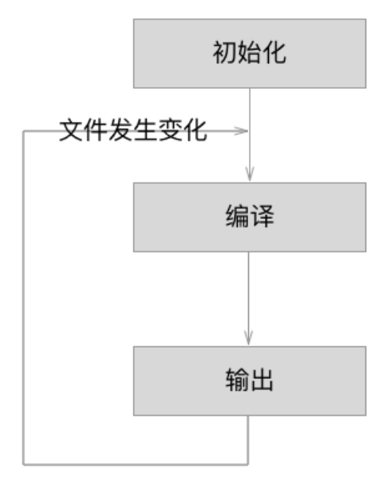
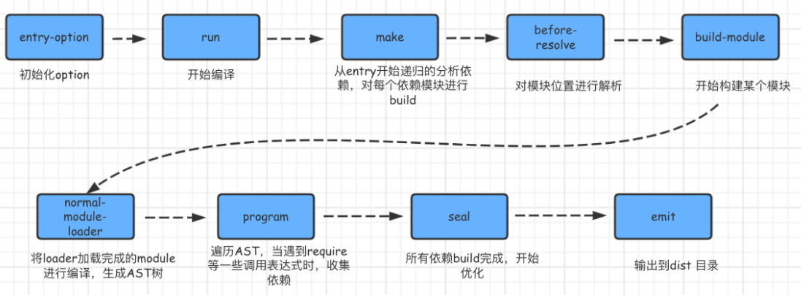

说说webpack的构建流程?
参考答案
一、运行流程
webpack 的运行流程是一个串行的过程，它的工作流程就是将各个插件串联起来
在运行过程中会广播事件，插件只需要监听它所关心的事件，就能加入到这条webpack机制中，去改变webpack的运作，使得整个系统扩展性良好
从启动到结束会依次执行以下三大步骤：
- 初始化流程：从配置文件和
Shell语句中读取与合并参数，并初始化需要使用的插件和配置插件等执行环境所需要的参数 - 编译构建流程：从 Entry 发出，针对每个 Module 串行调用对应的 Loader 去翻译文件内容，再找到该 Module 依赖的 Module，递归地进行编译处理
- 输出流程：对编译后的 Module 组合成 Chunk，把 Chunk 转换成文件，输出到文件系统

初始化流程
从配置文件和 Shell 语句中读取与合并参数，得出最终的参数
配置文件默认下为webpack.config.js，也或者通过命令的形式指定配置文件，主要作用是用于激活webpack的加载项和插件
关于文件配置内容分析，如下注释：
var path = require('path');
var node_modules = path.resolve(__dirname, 'node_modules');
var pathToReact = path.resolve(node_modules, 'react/dist/react.min.js');
module.exports = {
// 入口文件，是模块构建的起点，同时每一个入口文件对应最后生成的一个 chunk。
entry: './path/to/my/entry/file.js'，
// 文件路径指向(可加快打包过程)。
resolve: {
alias: {
'react': pathToReact
}
},
// 生成文件，是模块构建的终点，包括输出文件与输出路径。
output: {
path: path.resolve(__dirname, 'build'),
filename: '[name].js'
},
// 这里配置了处理各模块的 loader ，包括 css 预处理 loader ，es6 编译 loader，图片处理 loader。
module: {
loaders: [
{
test: /\.js$/,
loader: 'babel',
query: {
presets: ['es2015', 'react']
}
}
],
noParse: [pathToReact]
},
// webpack 各插件对象，在 webpack 的事件流中执行对应的方法。
plugins: [
new webpack.HotModuleReplacementPlugin()
]
};webpack 将 webpack.config.js 中的各个配置项拷贝到 options 对象中，并加载用户配置的 plugins
完成上述步骤之后，则开始初始化Compiler编译对象，该对象掌控者webpack声明周期，不执行具体的任务，只是进行一些调度工作
class Compiler extends Tapable {
constructor(context) {
super();
this.hooks = {
beforeCompile: new AsyncSeriesHook(["params"]),
compile: new SyncHook(["params"]),
afterCompile: new AsyncSeriesHook(["compilation"]),
make: new AsyncParallelHook(["compilation"]),
entryOption: new SyncBailHook(["context", "entry"])
// 定义了很多不同类型的钩子
};
// ...
}
}
function webpack(options) {
var compiler = new Compiler();
...// 检查options,若watch字段为true,则开启watch线程
return compiler;
}
...Compiler 对象继承自 Tapable，初始化时定义了很多钩子函数
编译构建流程
根据配置中的 entry 找出所有的入口文件
module.exports = {
entry: './src/file.js'
}初始化完成后会调用Compiler的run来真正启动webpack编译构建流程，主要流程如下：
compile开始编译make从入口点分析模块及其依赖的模块，创建这些模块对象build-module构建模块seal封装构建结果emit把各个chunk输出到结果文件
compile 编译
执行了run方法后，首先会触发compile，主要是构建一个Compilation对象
该对象是编译阶段的主要执行者，主要会依次下述流程：执行模块创建、依赖收集、分块、打包等主要任务的对象
make 编译模块
当完成了上述的compilation对象后，就开始从Entry入口文件开始读取，主要执行_addModuleChain()函数，如下：
_addModuleChain(context, dependency, onModule, callback) {
...
// 根据依赖查找对应的工厂函数
const Dep = /** @type {DepConstructor} */ (dependency.constructor);
const moduleFactory = this.dependencyFactories.get(Dep);
// 调用工厂函数NormalModuleFactory的create来生成一个空的NormalModule对象
moduleFactory.create({
dependencies: [dependency]
...
}, (err, module) => {
...
const afterBuild = () => {
this.processModuleDependencies(module, err => {
if (err) return callback(err);
callback(null, module);
});
};
this.buildModule(module, false, null, null, err => {
...
afterBuild();
})
})
}过程如下：
_addModuleChain中接收参数dependency传入的入口依赖，使用对应的工厂函数NormalModuleFactory.create方法生成一个空的module对象
回调中会把此module存入compilation.modules对象和dependencies.module对象中，由于是入口文件，也会存入compilation.entries中
随后执行buildModule进入真正的构建模块module内容的过程
build module 完成模块编译
这里主要调用配置的loaders，将我们的模块转成标准的JS模块
在用 Loader 对一个模块转换完后，使用 acorn 解析转换后的内容，输出对应的抽象语法树（AST），以方便 Webpack 后面对代码的分析
从配置的入口模块开始，分析其 AST，当遇到 require 等导入其它模块语句时，便将其加入到依赖的模块列表，同时对新找出的依赖模块递归分析，最终搞清所有模块的依赖关系
输出流程
seal 输出资源
seal方法主要是要生成chunks，对chunks进行一系列的优化操作，并生成要输出的代码
webpack 中的 chunk ，可以理解为配置在 entry 中的模块，或者是动态引入的模块
根据入口和模块之间的依赖关系，组装成一个个包含多个模块的 Chunk，再把每个 Chunk 转换成一个单独的文件加入到输出列表
emit 输出完成
在确定好输出内容后，根据配置确定输出的路径和文件名
output: {
path: path.resolve(__dirname, 'build'),
filename: '[name].js'
}在 Compiler 开始生成文件前，钩子 emit 会被执行，这是我们修改最终文件的最后一个机会
从而webpack整个打包过程则结束了
小结
